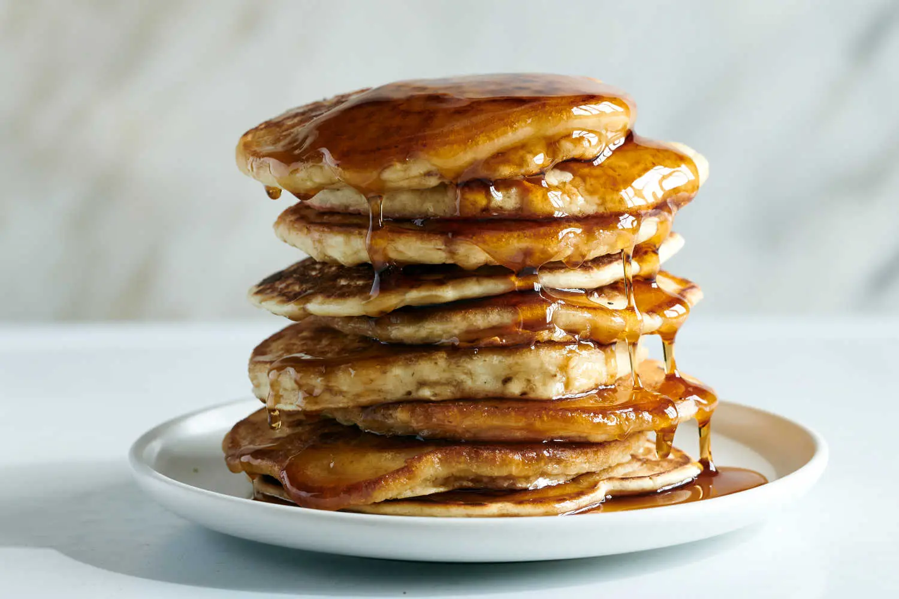

Vegan Pancakes

Description
Vegan pancakes are as tasty as non-vegan ones, and we're here to prove it! Made with a blend of basic ingredients like flour, baking powder, and vanilla, these pancakes cook up fluffy and full of fantastic flavor. Simple substitutions like apple cider vinegar and almond milk ensure a vegan-friendly twist without compromising taste or texture. Like traditional pancake recipes, you'll mix the dry and wet ingredients to create a smooth batter that promises airy, melt-in-your-mouth goodness. Serve these delectable pancakes with your choice of toppings, whether the classic maple syrup, a spoonful of fresh fruit, or a dollop of coconut whipped cream. This is a pancake stack you won't be able to resist!
Ingredients
- 1 cup flour(125 g)
- 2 tablespoons organic sugar
- 1 tablespoon baking powder
- ½ teaspoon salt
- 1 cup non-dairy milk(240 mL)
- 1 tablespoon apple cider vinegar
- 1 teaspoon vanilla
- maple syrup, to serve
Toppings
- In a medium bowl, add the flour, sugar, baking powder, and salt, and stir to combine.
- In a medium bowl or liquid measuring cup, add almond milk, apple cider vinegar, and vanilla, and stir to combine.
- Pour the liquid mixture into the dry mixture and whisk until smooth.
- Let batter rest for 5 minutes.
- Pour about ½ cup (65 grams) of batter onto a nonstick pan or griddle over medium heat.
- When the top begins to bubble, flip the pancake and cook until golden.
- Serve warm with maple syrup.
- Enjoy!
Steps
- In a Dutch oven (or a large nonstick soup pot), heat the 1 tablespoon oil (or 1/3 cup water) over medium heat. Once the oil is hot (or once the water is simmering), add the onions and cook for 2 minutes, seasoning with a pinch of salt. Add the garlic, mushrooms, and crumbled tempeh, and cook for 5 more minutes. Add the chili powder, paprika, oregano, cumin, cayenne pepper, and salt. Stir the spices into the vegetables and cook for 1 minute, or until fragrant.
- Pour in the vegetable broth to deglaze the pan, scraping up any browned bits on the bottom of the pot.
- Add in the beans, crushed tomatoes, tomato paste, corn, and pasta. Stir well to combine.
- Bring the mixture to a boil, then reduce the heat to maintain a simmer. Cook for 12 to 15 minutes, or until the pasta is cooked through but not soggy. If you want it to be a bit saucier, add a splash more of broth or water.
- Season to taste with salt and pepper, and stir in the agave or other sweetener. Taste for seasonings again and adjust accordingly.
- If using vegan cheese, sprinkle it all over the top of the chili mac. Cover the lid and let warm through for a few minutes. Allow chili mac to rest at least 15 minutes before serving and top with fresh chopped cilantro and any other desired toppings.
Home